Android-Based Mecanum Wheel Robot Car
The Hong Kong Polytechnic University
This Mecanum Wheel Robot car is based on an Android application that enables user to control its speed and direction. However, we set a constant speed for this car, which means each wheel has exactly the same speed. The PID control program can make sure the car always maintain the required speed on any floor regardless of its friction. As one of the field buses, CAN bus is used for main controller to communicate with 2 motor controllers. Bluetooth HC-05 is used for communication between the phone and main controller.
The basic requirement for this car is that user can move it in totally 8 fixed directions, each direction has 45° difference. It also has 360° free turning feature. For advanced design, we would refine the fixed direction into smaller angle providing smoother movement, which would enable this car to move in a cycle.
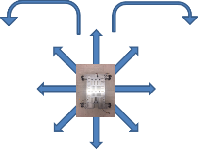 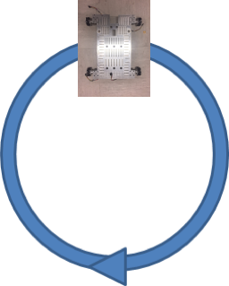Component
Motor(ASLONG Dc motor 3530B) and Mecanum Wheel
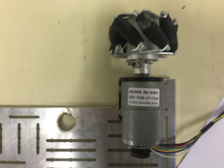- Motor Driver(L298N) 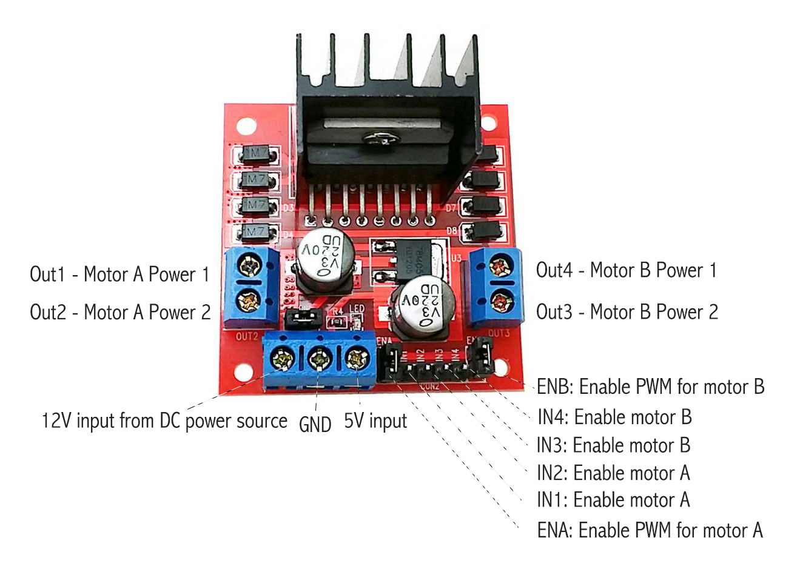
Bluetooth Module(hc05)

Nuvoton
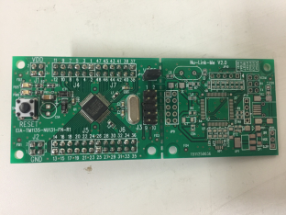- 12V Battery
(OUT1, OUT2) are connected with Motor A positive & negative and (OUT3, OUT4) are connected with Motor B positive & negative. （ENA, IN1, IN2) are control of Motor A and (ENB, IN3, IN4) are control of Motor B, which are all connected with MC I/O pins. ENA and ENB must be connected with PWM pins of MC so that can control the speed of Motor A and Motor B.
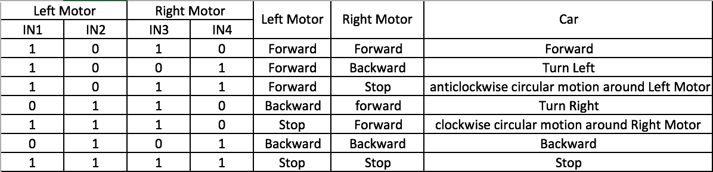System Structure
The system would be divided into 3 parts: Mobile Application, Main Control Unit (MCU), and Motor Control Section.
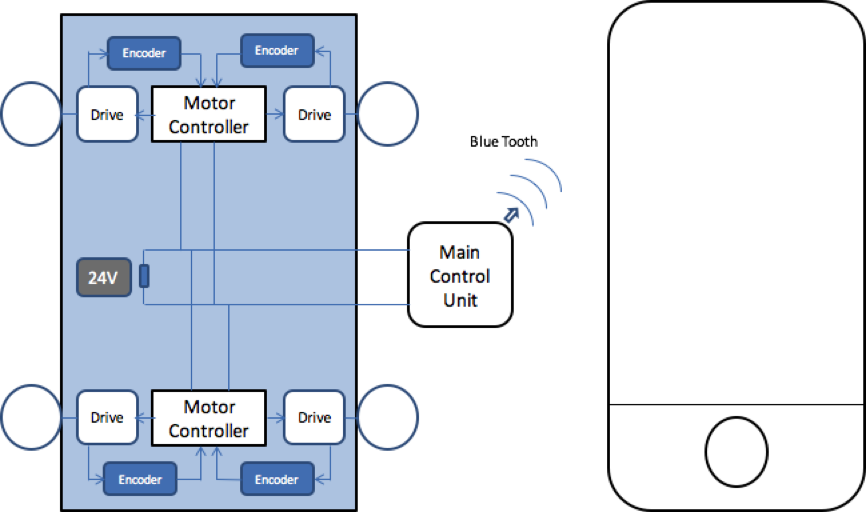- Mobile Application
- Main Control Unit (MCU) 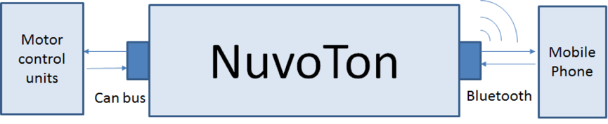
- Motor Control Section
We used Cordova as development platform and we have used CSS3, HTML5 and Javascript to develop this web-based android application. The layout of our mobile android app is shown as below:
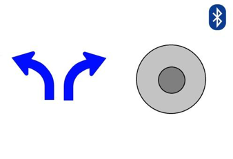There are totally four buttons on the Android app. The left turn button and the right turn button on the left part are used to turn around the car, but the user needs to constantly press it. Note that when users press the left button, they cannot simultaneously press the right button, and vice versa.
The 8 directional movement button is on the right part of the android app. Initially, we intend to make it as a drag button in which the center circle button can be dragged towards eight directions. But in the end, we just created 8 unmoved buttons on the circle.
The movement button and turn around button can be simultaneously pressed in order to control the direction and the movement of car in the same time.
The Bluetooth button is on the top right corner of the app, which is a switch of the Bluetooth.
My role in this project group is to develop the embedded system and focus on establishing the communication link between the mobile application, the Main Control Unit (MCU) and the Motor Controllers (MC). In the main control unit, we chose to use Nuvoton NUC131LD2AE. The board receives movement command from application through Bluetooth. The Bluetooth HC-05 obeys the standard of Universal Asynchronous Receiver and Transmitter (UART). As a result, the Nuvoton connects with HC-05 through the pins of UART_TXD (UART transmit) and UART_RXD (UART receive). The Controller Area Network (CAN) is used as a kind of communication path on which the Revolutions Per Minute (RPM) is sent from the main controller to the Motor Controller. We used MCP2551 to achieve this CAN communication.
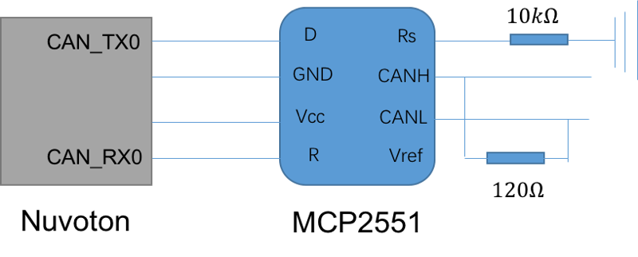 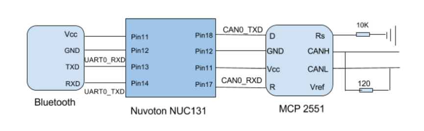One important thing should be noted is, when connecting BT with NUC131, the UART Transmit of BT should be connected with the UART Receive of NUC131. Correspondingly, the UART Receive of Bluetooth is wired with the UART Transmit of the NUC131. However, the connection between the CAN and NUC131 is totally different. The CAN Receive of MCP2551 should be connected with the CAN Receive of NUC131 and the Transmit should also be connected with the Transmit.
For the communication between BT and MCU, I need to make sure they could recognize and communicate with each other. So, I set up the data transmit protocol that the length of data should be 8 bytes and the data list should have Head byte 0xF0 and Tail byte 0xFF as well, which all in hexadecimal format.
For the communication between MCU and MC, I set up an ID inside CAN, which is 0x31, to make sure the MC could identify the ID and correctly receive the data sent from the CAN. Moreover, in order to make sure the CAN could be interrupted, I checked the datasheet of the NUC131 to find its status interrupt value of CAN Interrupt Identify Register (IIR), which is 0x00000800.
For the Motor Control Section, we divided it into 3 parts: motor controller (MC), motor driver, and motor with encoder. In our design, every MC controls two motors’ action, so we have two MCs. They are all connected with the MCU through CAN bus so that they would receive the message from MCU, which guides it how to control speed and direction. MC uses PWM to control the electrical power delivered to the motor, which is realized by turning the driver ON and OFF at different rates, changing the portion of the period of ON and OFF to control the speed of the motor. There is also a power circuit (usually an H-bridge) that drives the motor in the required direction.

The Motor Control Section is a closed-loop unit so it can regulate the power delivered to the motor to reach its required velocity. Closed loop control system is an essential topic for embedded systems, bringing together actuators and sensors with the control algorithm in software. For example, motor speed can be controlled by varying the PWM duty cycle used to drive the motor. This is the open-loop control. However, due to the lack of feedback, the actual motor speed could not be verified. This is important because driving the motor with the same PWM duty cycle does not guarantee the motor to run at the same speed under all circumstances. A motor will run faster in load-free condition than under load with the same PWM signal. In order to control the motor speed, we need to close the loop by adding feedback of the actual motor speed to the controller. Therefore, there is an encoder on every motor, which is used to observe motors’ status and give feedback to the controller. The encoder will provide the counter with sequential pulses that corresponding to the number of rotation of the motor. Given the current motor’s status, the controller will compare it to the requested velocity and direction, and then adjust it.
At the beginning, we just gave the motor speed and direction directly inside the program with external power supplied to the motor driver and circuit board. By changing the value of the duty cycle for PWM output, we can see the speed has changed along with the duty cycle of PWM. When the duty cycle is bigger, the speed of the motor is faster. And then, we changed the direction output for motors, which is achieved by changing two IN input of driver from ‘0’ and ‘1’ to ‘1’ and ‘0’ separately. After that, We can prove motor’s speed and direction are both under control.
PID Algorithm
Before we begin to design a PID controller, we need to understand the problem. In this example, we want to move the shaft of the motor from its current position to the target position as below.
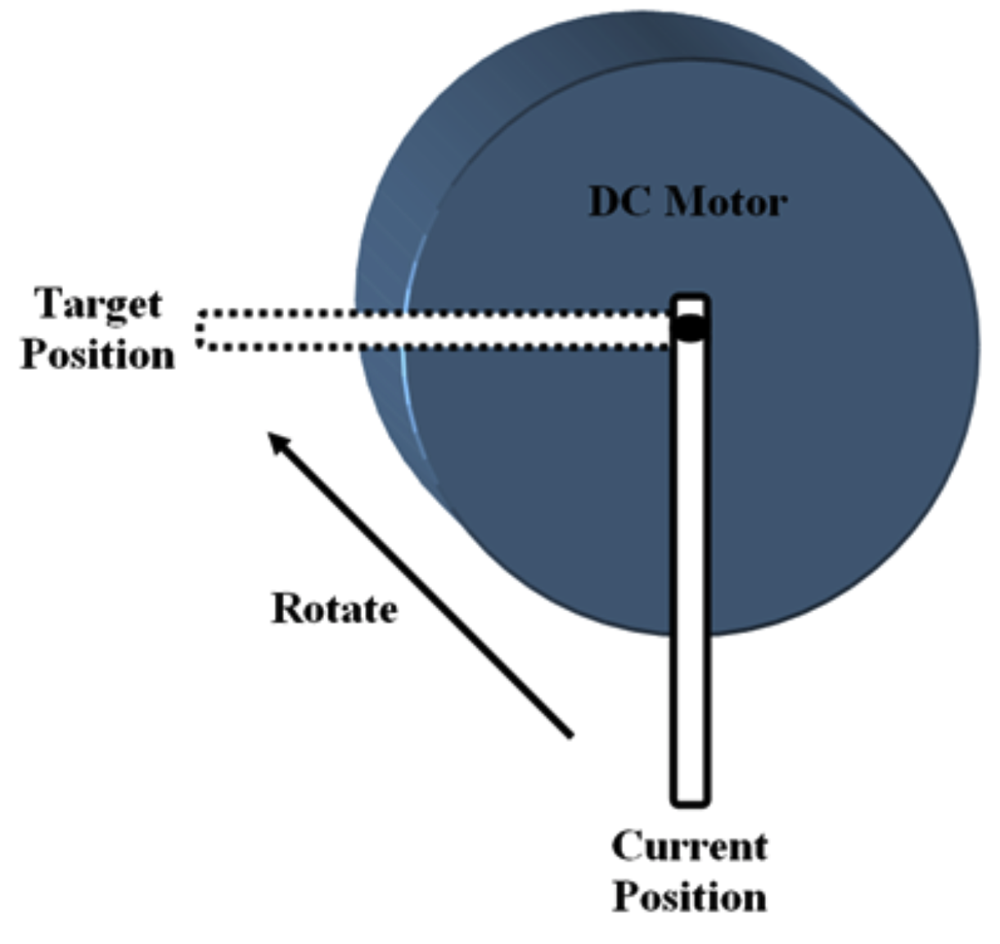There are a few terms commonly used to describe the PID control loops, such as:
Control Variable (CV) – This is the output of the control loop. In this case, the CV is the duty cycle of the PWM signal that drives the motor.
Process Variable (PV) – This is the feedback value returned by the system (or encoder) to the MC. In this example, the PV is the current angle of the motor shaft.
Set Point (SP) – Set point is the value that we desire for the system. In our case, the SP is the target position of the motor shaft in angle.
Error (E) – Error refers to the difference between the set point and the process variable. In another words, it means how far the current position of the motor shaft from the target position.
The PID controller, just like its name, comprises a proportional (P), an integral (I) and a derivative (D) part.
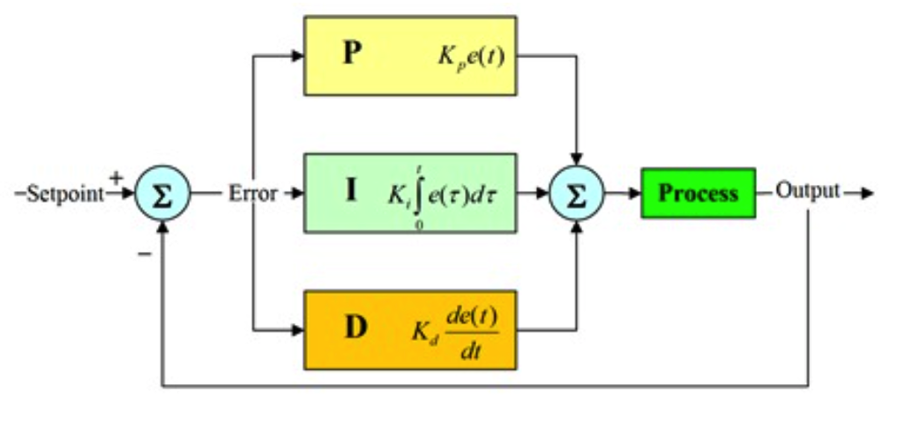- Proportional Controller
- Integral Controller
- Derivative Controller
- Summary
When the current position of the motor shaft is still far away from the target position, we want to apply more power to drive the motor towards the target position so that we can reach there faster. When the shaft is getting nearer to the target position, we will reduce the power to slow it down. At the time the shaft reaches the target position, the motor needs to be stopped. If the shaft position has overshot, we need to apply negative power to the motor (reverse the motor) to bring it back to the target position. In short, this is called proportional controller because the power we apply to the motor is proportional to the error of the system. The block diagram of the proportional controller is shown below:
From the block diagram, we can see that the PWM duty cycle (output) is the result of multiplying the error with a constant, Kp.Error = Set Point – Process Variable. Control Variable = Kp * Error
Actually, if there is only P controller, when settles down, the actual position of the motor shaft will not reach the target position. This is because when the current position is near to the target position, the error becomes very small and the computed PWM duty cycle is too small for the motor to overcome the friction and gravity. To overcome this problem for P controller, I controller is being introduced. As its name suggests, the integral is merely an accumulated error signals encountered since startup. Integral = ∑(Error)
This total is multiplied by a constant, Ki, and is added into the loop output. Unlike the P controller, the I controller is rarely used alone, but mostly in combination with the P or PD controller. When the system has already settled down with a small error, the integral still continues to accumulate until the CV is large enough to bring the PV inline with SP.
Error = Set Point – Process Variable
Integral = Integral + Error
Control Variable = (Kp * Error) + (Ki * Integral)Let’s say you are driving a car, and you need to stop your car exactly 100m from your current position as soon as possible. If you are travelling at 10km/h, you would want to accelerate your car so that you can reach the target sooner. In contrast, if you are cruising at 100km/h, you need to start braking so that you can stop at 100m and will not overshoot. This is where the derivative controller comes into play.
The derivative of any variable describes how that variable changes over time. In a PID controller, the derivative is the rate of change of the error. It can be described as: Derivative = Error – Last Error
Negative values of derivative indicate an improvement (reduction) in the error signal, whcih means much closer to the destination. When the negative derivative is multiplied with a constant, Kd, and are added to the output of the loop, it can slow down the system when approaching the target.
So by joining the P, I and D controller, we can get the equation for PID controller
Last Error = Error
Error = Set Point – Process Variable
Integral = Integral + Error
Derivative = Error – Last Error
Control Variable = (Kp * Error) + (Ki * Integral) + (Kd * Derivative)We have the P controller for fast system response, I controller to correct the small error and D controller to restrain the system and reduce overshoot. From the block diagram of PID controller, we can see that the output of the loop is merely the sum of output from P, I and D controller.
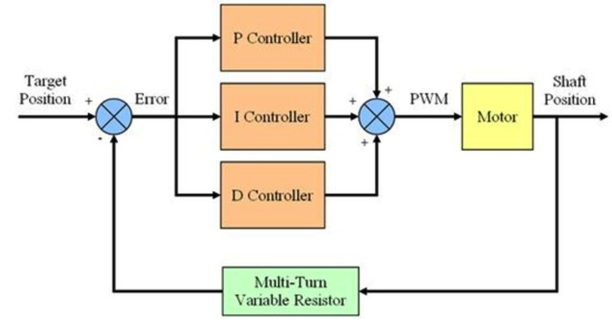Conclusion
By developing this robot car, we've mastered how to develop a basic android application, how to develop an embedded system by using C language, how to set up PID control system and how to combine these separate parts become a whole project. The mecanum wheel based robot car has a basic mobile platform and it could achieve 360 degrees’ free movement controlled by the app. With the PID control, it could perform a good control on its speed and direction so that make it accurately move on the floor as users’ wish. Although we had no time to build a shell for it and decorated it, this car could successfully perform the functions as we designed. Because of the specialty of this kind of mecanum wheel, this car could effectively move in a much smaller area which could save time and improve efficiency.
Given that the hardware should operate with 5V and the nominal voltage of the motor is 24V, we used a 12V power supply with a voltage regulator which is used to convert 12V to 5V for components. The reason why we not just used 24V power source is that the regulator cannot afford 24V. As a result, the speed of the car was limited and it cannot be fast. We would recommend using more effective regulator to adjust 24V into 5V so that the car can get a much wider range of speed.
In the future, it could be improved with more functions. It could be assembled with a robot arm to grab objects. It could also be armed with infrared emitter to detect objects and automatically avoid an obstacle. Once its functions are well developed and expanded, it could be used in more fields such as carriage, detection, and rescue on the feature of the 360 degrees’ free movement.
You can find the codes at GitHub.